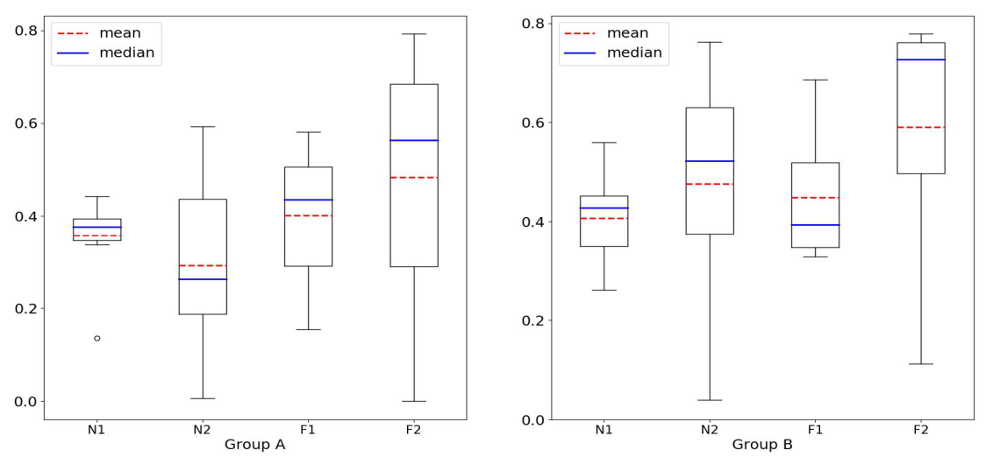

분류 난이도를 반영하는 오버샘플링 크기 산출
분류 복잡도를 활용한 오버 샘플링 크기 산출 알고리즘
완전 균형보다 적은 생성량으로도 데이터셋에 맞는 오버샘플링 규모를 적용할 수 있는지 평가한 석사학위 연구입니다.
- 18개 데이터셋 · 3개 부스팅 모델 · 20회 반복 5-fold 검증
- 평균 생성량: 완전 균형 대비 45–66%


연구 문제
클래스 수를 같게 만드는 오버샘플링은 불균형 비율만으로 생성량을 결정합니다. 하지만 같은 불균형 비율이라도 클래스가 잘 분리된 데이터와 경계가 겹치는 데이터의 학습 난이도는 다릅니다. 필요한 양보다 많은 합성 표본은 소수 클래스의 영역을 과도하게 확장할 수 있습니다.
이 연구는 완전 균형보다 적은 생성량으로도 데이터셋에 적절한 오버샘플링 규모를 적용해 분류 성능을 유지하거나 개선할 수 있는지 평가했습니다.
접근 방법
데이터의 분리 정도를 생성량에 반영
분류 복잡도는 네 지표로 측정했습니다. N1은 소수 클래스 주변의 같은 클래스·다른 클래스 이웃 사이 거리 비율, N2는 소수 클래스의 이웃 중 다른 클래스가 차지하는 비율을 사용합니다. 두 지표는 SMOTE의 생성 환경에 맞춰 소수 클래스와 k개 이웃을 중심으로 수정했습니다.
F1은 변수별 클래스 평균의 차이와 분산을 이용한 분리 정도, F2는 변수별 클래스가 겹치는 구간의 표본 비율을 반영합니다. 지표를 0–1 범위의 복잡도 T로 표현해, 완전 균형에 필요한 생성량에 T를 적용했습니다. 따라서 모든 데이터에 동일한 증강량을 부여하지 않고 분포 특성에 따라 양을 조정합니다.
실험 설정
UCI·PROMISE 등의 공개 이진 분류 데이터셋 18개를 사용했습니다. 다중 클래스 자료는 특정 소수 클래스와 나머지 클래스로 재구성하고 범주형 변수를 제외했습니다. SMOTEBoost·RAMOBoost·WOTBoost에 적용해 완전 균형 방식과 비교했습니다.
Decision Stump 25개, 이웃 수 k=5를 사용하고, 층화 5-fold 교차검증을 20회 반복해 AUC로 평가했습니다.
기여
더 적은 생성량으로 데이터셋에 맞는 성능 확보
18개 데이터셋에서 산출한 평균 생성량은 완전 균형 기준의 45–66%였습니다. Oil과 Yeast를 제외한 16개 데이터셋에서는 적어도 한 가지 부스팅 모델·복잡도 지표 조합이 완전 균형과 같거나 더 높은 AUC를 보였습니다. 모든 모델에서 일관되게 우수했다는 의미는 아닙니다.
| 방식 | 완전 균형 대비 평균 생성량 | 선정 횟수 |
|---|---|---|
| N1 | 47% | 11 |
| N2 | 45% | 17 |
| F1 | 52% | 6 |
| F2 | 66% | 11 |
| 완전 균형 | 100% | 9 |
적용 범위와 한계
불균형 비율만으로 분류 난이도를 설명하기 어렵다는 점과, 생성량을 데이터 특성에 맞춰 줄일 여지를 실험으로 제시했습니다. 소수 표본이 매우 적은 Glass 등에서는 지표가 불안정할 수 있습니다. 복잡도는 초기 데이터에서 산출해 고정했으며, 부스팅 과정에서 다시 측정하는 방식과 다른 생성 알고리즘으로의 확장은 후속 과제로 남겼습니다.
논문 및 코드
석사학위논문 · RISS · 후속 학술지 연구의 방법·실험 및 코드
이 페이지의 수치는 석사논문의 18개 데이터셋 실험입니다. 후속 학술지 논문의 실험 구성과 구분해 제시했습니다.